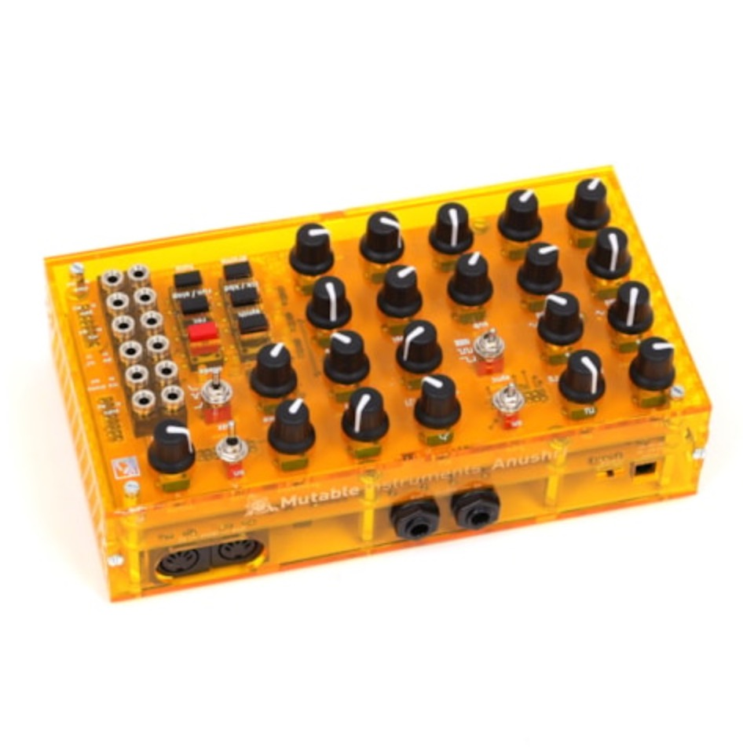

DIY digitally controlled analog monosynth.

Anushri is a monophonic synthesizer with an all-analog signal path, paired with a lo-fi digital drum synthesizer. These two sections are controlled by an on-board sequencer/arpeggiator, featuring generative drum pattern sequencing. Anushri is open to the modular world thanks to its analog patching area.
All DB data
- Name: Anushri
- Author: Mutable Instruments
- Link: https://mutable-instruments.net/archive/
- Demo: https://www.youtube.com/watch?v=zZLmu_DnRBs
- Picture: ../pics/anushri.jpg
- Description: DIY digitally controlled analog monosynth.
- Notes: Anushri is a monophonic synthesizer with an all-analog signal path, paired with a lo-fi digital drum synthesizer. These two sections are controlled by an on-board sequencer/arpeggiator, featuring generative drum pattern sequencing. Anushri is open to the modular world thanks to its analog patching area.
- Artifacts: {“Schematic”=>true}{“PCB”=>true}{“BOM”=>true}{“FW”=>true}{“Docs”=>true}{“Enclosure”=>false}
- Tags: AVRMonophonicDigitalModularMIDI
- Level: Intermediate
{kind=link}